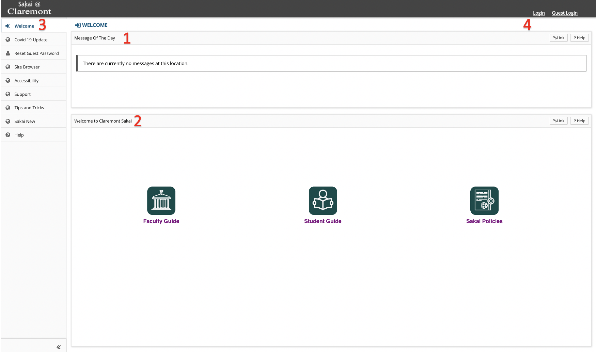
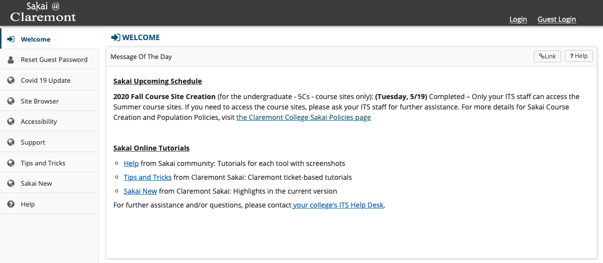

Before logging into Sakai, you will immediately see the home page area displaying the Message of the Day, announcements, calendar, notifications, account utilities, enrolled courses, and other system-wide resources.
Sakai Navigation Introduction
Navigation of Your Sites: Sakai is organized into course sites and project sites. After login you will be directed to the landing page. The sites you have access to will be listed in the Sites tab in the upper right corner. You can click on the star icon to mark a site as a favorite for easier access. See Course Sites for more details.
The Use of Browser Back Button: Your browser’s back button may not work as expected in Sakai. It is recommended that you do not use the browser "back button". To reset your current page, click on the tool name in the dark blue bar at the top, which will return you to the initial view for this tool. Please be careful when doing so as it will discard any unsaved work or text on the page.
Sakai Landing Page (Before Login)

Sakai Landing Page consists of :
Sakai Home Page (After Login)
The Home page of Sakai is designed to give you an overview of what is happening in your courses and provides access to your individual account information and preferences.
The Message of the Day is a general announcement that is updated with important information.

×
Welcome page
The Welcome Page contains Sakai guides for Faculty and Students as well as Claremont Sakai Policies.
×
Left-hand Pane Features
The Left-hand pane is usually where course site tools, different settings, and other resources are located.
×
Login
This is where Claremont Students and Guests may login.
×
Left Menu
The Left-hand pane is usually where course site tools, different settings, and other resources are located.
×
Upper-Right Menu
The upper-right menu after login allows users access to notifications & announcements alerts, the sites menu, and the user menu. The sites menu allows users to create project sites, edit preferences, and organize favorite sites. The user menu provides access to the calendar and preferences tools; this is also where users can log out of Sakai.